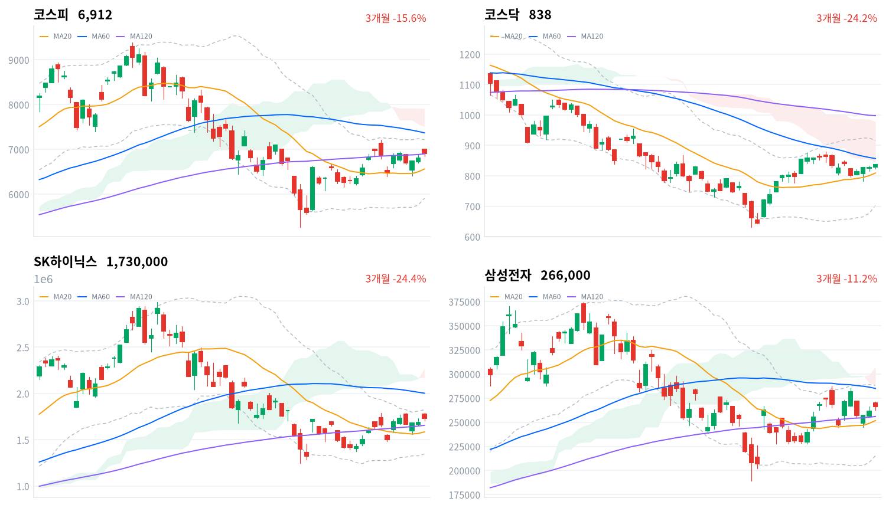
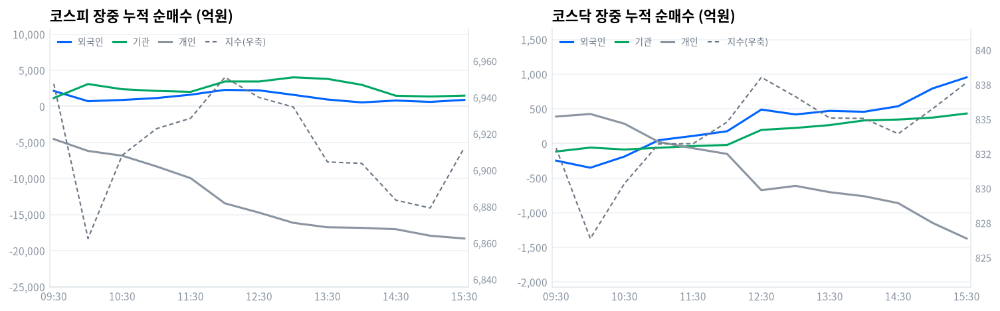

코스피는 미국 전력망 외국산 장비 배제 행정명령과 엔비디아 실적 훈풍에 힘입어 1.53% 오른 6,912.37로 마감했다. 코스닥도 1.30% 오른 837.65로 함께 올랐다.
외국인이 코스피에서 1,333억원을 순매수하며 상승에 힘을 보탰지만(당일 잠정) 개인은 1조9,116억원을 순매도해 온도차를 보였다. 한국은행은 이날 기준금리를 3.00%로 올렸지만 국고채 금리는 오히려 내렸다.
전력기기·반도체 중심의 위험 노출은 다음 세션까지 확대한다. 코스피는 오늘 1.53% 올라 6,912로 마감했고 코스닥도 1.30% 오른 838으로 따라붙었다. 전기장비 업종이 10.3% 급등하며 지수 상승을 이끌었고, 외국인이 코스피에서 1,333억원(당일 잠정)을 순매수하며 방향을 함께했다.
이 상승은 여러 층이 서로 맞물린 결과다. 미국 전력망 외국산 장비 배제 행정명령이 국내 전력기기주 급등의 직접 촉매가 됐고, 엔비디아 실적 서프라이즈와 미국 물가지표 안정이 반도체 대형주 매수세를 뒷받침했다.
기관은 코스피에서 1,835억원을 순매수했다(당일 잠정). 장중 누적 기준으로는 금융투자가 정규장 마감 시점 4,398억원 매수를 주도했고 연기금등은 649억원 순매도에 그쳐, 프로그램·선물 연계 매수가 하루 종일 방향을 이끈 그림이 확인된다. 개인은 1조9,116억원을 순매도해(당일 잠정) 상승을 따라가지 못했지만, 오늘 한은이 기준금리를 올렸는데도 국고채 3년물은 되레 6.1bp 내렸다. 인상 재료가 이미 채권시장에 선반영돼 있었다는 뜻으로 읽을 수 있다.
이 판단이 틀렸다고 볼 조건은 명확하다. 코스피가 일목 전환선(6,809)을 다시 밀리면 오늘 상승이 하루짜리 반등에 그쳤다고 보고 비중을 줄인다. 반대로 개인 매도가 다음 세션에도 이어진다면 상승의 지속력부터 의심해야 한다.
| 지수 | 종가 | 등락률 | 시가 | 고가 | 저가 | 전일 종가 |
|---|---|---|---|---|---|---|
| 코스피 | 6,912.37 | +1.53% | 6,996.12 | 6,996.12 | 6,841.88 | 6,808.21 |
| 코스닥 | 837.65 | +1.30% | 828.42 | 839.57 | 824.22 | 826.87 |
코스피는 전일 종가보다 훨씬 높은 6,996에서 갭업 출발해 개장과 동시에 장중 고가를 찍었다. 이후 매물이 나오며 밀리기 시작해 10:00 6,862까지 내려갔고 이 구간에서 장중 저가 6,842를 기록했다.
정오 무렵 6,951까지 반등했다가(12:00) 오후 들어 다시 눌려 15:00 6,879까지 내려간 뒤, 막판 매수세가 붙으며 6,912로 마감했다. 시가에서 종가까지는 크게 밀렸지만 전일 종가와 비교하면 여전히 큰 폭의 상승이다.
코스닥은 828에서 출발해 10:00 826까지 눌렸다가 이후 꾸준히 올라 12:30 838까지 상승폭을 키웠다. 오후 들어 잠시 833~836 사이에서 등락했지만 마감 무렵 다시 올라 837.65로 장중 고가권에서 마쳤다.
간밤 미국 증시는 엔비디아의 분기 매출이 시장 예상을 웃돌고 7월 근원 개인소비지출(PCE) 물가지수가 대체로 예상에 부합해 물가 부담 우려가 누그러지며 올랐다. 이 조합이 국내 반도체 대형주 매수세로 이어졌고, 같은 날 트럼프 대통령이 미국 전력망의 외국산 장비 도입을 제한하는 행정명령에 서명하며 국내 전력기기주 급등의 직접 촉매가 됐다.

코스피·코스닥·SK하이닉스·삼성전자 3개월 일봉에 이동평균(20·60·120)·볼린저밴드·일목균형표 구름대를 오버레이했다. 상승 캔들은 녹색, 하락 캔들은 적색으로 표시된다.
코스피(6,912)는 이동평균이 혼조 배열인 가운데 일목 전환선(6,809)을 지지선으로, 볼린저 상단(7,215)을 저항으로 두고 마감했다. 저항을 넘어서면 60일선(7,369)까지 열리고, 전환선이 무너지면 20일선(6,562)까지 밀릴 수 있다.
코스닥(838)은 역배열 속에서도 일목 구름 하단(846)을 저항으로, 일목 전환선(831)을 지지 삼아 마감했다. 구름 하단을 넘어서면 60일선(857)까지 열리고, 전환선이 무너지면 20일선(809)까지 밀릴 수 있다.
SK하이닉스(173만원)는 이동평균이 혼조 배열인 가운데 120일선(166만원)을 지지 삼아 스윙 고점(179만원)을 저항으로 두고 마감했다. 고점을 넘어서면 볼린저 상단(182만원)까지 열리고, 120일선이 무너지면 일목 전환선(164만원)까지 밀릴 수 있다.
삼성전자(26.6만원)는 일목 전환선(26.7만원)을 바로 위 저항으로 두고 120일선(25.6만원)을 지지 삼아 마감했다. 전환선을 넘어서면 60일선(28.5만원)까지 열리고, 120일선이 무너지면 20일선(25.2만원)까지 밀릴 수 있다.
위 레벨은 20·60·120일 이동평균, 볼린저밴드, 일목균형표, 스윙 고저를 기계적으로 계산한 값이며 투자 권유가 아니다.
| 주체 | 순매수(억원) |
|---|---|
| 개인 | -19,116 |
| 외국인 | +1,333 |
| 기관 | +1,835 |
| 주체 | 순매수(억원) |
|---|---|
| 개인 | -1,752 |
| 외국인 | +2,955 |
| 기관 | -1,192 |
코스피에서는 개인이 1조9,116억원을 순매도했지만(당일 잠정) 외국인과 기관이 각각 1,333억원, 1,835억원을 순매수하며 지수 상승을 지지했다. 두 매수 주체의 방향이 일치한다는 점에서 오늘 상승은 개인 혼자만의 기대감이 아니라 실제 자금이 들어온 결과로 볼 수 있다.
코스닥에서는 외국인이 2,955억원을 순매수해 가장 적극적으로 매수했지만(당일 잠정) 기관은 1,192억원을 순매도해 방향이 엇갈렸다. 개인도 1,752억원을 순매도해, 오늘 코스닥 상승은 외국인 홀로 이끈 모양새다.

누적 순매수(억원), 정규장 09:30~15:30 30분 앵커 기준. 지수는 우측 축.
| 시각 | 코스피(억원) | 코스닥(억원) | ||||
|---|---|---|---|---|---|---|
| 개인 | 외국인 | 기관 | 개인 | 외국인 | 기관 | |
| 09:30 | -4,538 | +2,138 | +1,159 | +388 | -248 | -117 |
| 10:00 | -6,181 | +715 | +3,092 | +425 | -351 | -60 |
| 10:30 | -6,841 | +886 | +2,372 | +284 | -189 | -88 |
| 11:00 | -8,322 | +1,147 | +2,139 | +21 | +47 | -63 |
| 11:30 | -9,956 | +1,614 | +2,007 | -69 | +108 | -38 |
| 12:00 | -13,442 | +2,279 | +3,446 | -152 | +176 | -22 |
| 12:30 | -14,729 | +2,215 | +3,441 | -675 | +489 | +195 |
| 13:00 | -16,145 | +1,595 | +4,019 | -613 | +418 | +224 |
| 13:30 | -16,758 | +947 | +3,803 | -704 | +470 | +265 |
| 14:00 | -16,838 | +545 | +2,985 | -762 | +457 | +332 |
| 14:30 | -17,029 | +805 | +1,470 | -862 | +537 | +345 |
| 15:00 | -17,931 | +619 | +1,363 | -1,146 | +793 | +373 |
| 15:30 | -18,319 | +895 | +1,487 | -1,373 | +954 | +432 |
코스피 외국인 누적 순매수는 종일 플러스를 유지했고 전환은 없었다. 정오 무렵(12:06) 2,354억원으로 정점을 찍은 뒤 오후 초반 385억원(13:54)까지 줄었다가 마감 직전 다시 늘어 정규장 마지막 895억원을 기록했다. 같은 시간 코스피는 정오(12:00) 6,951로 국지적 고점을 찍은 뒤 오후 들어 6,879(15:00)까지 밀렸다가 종가 부근에서 반등해, 외국인 매수 강도의 오르내림과 대체로 같은 방향으로 움직였다.
코스피 기관은 09:12 순매도에서 순매수로 방향을 튼 뒤 13:13 4,260억원까지 매수를 늘렸다가 정규장 마지막 1,487억원으로 줄어 마감했다. 그 안을 갈라보면 금융투자(프로그램·선물 연계 매매가 몰리는 축)가 정규장 마지막 기준 4,398억원 매수로 하루 내내 가장 꾸준히 늘었다. 반대로 연기금등(정책성 장기 자금)은 오후 들어 매도로 돌아서 마지막 649억원 순매도를 기록했다.
코스닥에서는 개인이 11:01 순매수에서 순매도로 돌아선 뒤 정규장 마지막까지 매도를 키웠고, 외국인은 반대로 10:54 순매도에서 순매수로 돌아서 954억원까지 늘었다. 코스닥 지수가 오전 저점 이후 꾸준히 오른 흐름은 개인이 아니라 외국인·기관 전환과 결이 맞는다.
정규장 마지막 관측에서 마감 집계(당일 잠정)로 넘어가며 코스피는 개인 매도가 소폭 더 깊어지고 외국인·기관 매수는 오히려 늘어 마감 동시호가에서 두 매수 주체가 힘을 보탰다. 코스닥에서는 더 큰 되돌림이 있었다 — 외국인은 954억원에서 2,955억원으로 매수를 크게 늘렸지만 기관은 432억원 순매수에서 1,192억원 순매도로 뒤집혔다. 다음 거래일에는 코스닥 기관의 이 되돌림이 하루짜리 마감 수급인지, 새로운 매도 기조의 시작인지를 확인해야 한다.
| 시장 | 차익 순매수(억원) | 비차익 순매수(억원) | 전체 순매수(억원) |
|---|---|---|---|
| 코스피 | +566 | +985 | +1,551 |
| 코스닥 | +4 | +1,292 | +1,296 |
코스피 프로그램 매매는 방향성 바스켓 매매인 비차익이 985억원 순매수를 주도해 전체 프로그램이 1,551억원 순매수를 기록했다(당일 잠정). 외국인 현물 순매수(1,333억원)와 방향이 같아, 오늘 상승에는 프로그램 자금도 개별 종목 매수와 나란히 힘을 보탰다고 볼 수 있다. 선물 연계 기계적 매매인 차익은 566억원 순매수에 그쳐 방향에 미친 영향은 제한적이다.
코스닥은 비차익이 1,292억원 순매수로 전체 프로그램 순매수(1,296억원)를 사실상 주도했다. 다만 이날 코스닥 기관 전체 순매수는 1,192억원 순매도로 집계돼(당일 잠정) 프로그램을 통한 매수와 방향이 어긋난다. 프로그램 밖 비프로그램 매매에서 기관이 더 크게 팔았다는 뜻으로 읽을 수 있다.
| 순위 | 종목/ETF | 구분 | 거래대금 | 비고 |
|---|---|---|---|---|
| 1 | SK하이닉스 | 개별주 | 5.50조원 | - |
| 2 | 삼성전자 | 개별주 | 4.43조원 | - |
| 3 | 반도체 테마 ETF | 테마·롱 | 1.25조원 | 7종 합산 |
| 4 | 삼성전자우 | 개별주 | 0.76조원 | - |
| 5 | 대우건설 | 개별주 | 0.45조원 | - |
| 6 | SK하이닉스 레버리지 | 레버리지·롱 | 0.41조원 | 2종 합산 |
| 7 | 두산에너빌리티 | 개별주 | 0.32조원 | - |
| 8 | 2차전지 테마 ETF | 테마·롱 | 0.29조원 | 7종 합산 |
| 9 | 전력·에너지 테마 ETF | 테마·롱 | 0.28조원 | 2종 합산 |
| 10 | 삼성전자 레버리지 | 레버리지·롱 | 0.18조원 | 2종 합산 |
단위 백만원 원본을 조 단위로 환산. 같은 기초자산 ETF는 방향별로, 같은 테마 섹터 ETF는 테마별로 묶었으며 코스피200·코스닥150 추종 지수 ETF 및 그 레버리지·인버스, 해외 ETF는 제외했다.
위 섹터 스니펫(네이버 대분류, 1일 기준)에서는 2차전지(+5.84%)가 가장 크게 올랐고 방산(+3.87%)·철강소재(+2.12%)·반도체(+2.00%)가 뒤를 이었다. 자동차(-2.69%)가 가장 크게 내렸고 소프트웨어(-0.65%)·헬스케어(-0.58%)·증권(-0.03%)도 약세였다. 이 대분류에는 오늘 급등한 전력기기 관련 종목이 별도 항목으로 잡히지 않는데, 아래 세부 업종 분류에서는 그 힘이 뚜렷이 보인다.
kr_industry 세부 분류로 보면 전기장비(+10.3%)가 업종 등락률 1위였고 35종목 중 26종목이 올라 상승 종목 비율이 74.3%에 달해 폭넓은 상승 주도로 분류됐다. 전기제품(+6.44%)도 70종목 중 46종목이 올라 비율 65.7%로 같은 성격이었다.
반도체와반도체장비는 등락률이 1.87%에 그쳤지만 172종목 중 121종목이 올라 상승 종목 비율은 70.3%로 오히려 넓었다. 다만 아래 거래대금 표에서 보듯 실제 자금은 삼성전자·SK하이닉스 두 대형주에 9.93조원이 몰려, 업종 전체가 아니라 소수 대형주가 값을 끌어올린 하루였다. 반대로 건설(+1.33%)은 78종목 중 31종목만 올라 비율이 39.7%에 그쳐 좁은 상승·개별종목 장세로 분류됐다.
효성중공업(307.9만원)·HD현대일렉트릭(82.0만원)·LS ELECTRIC(21.95만원)은 나란히 두 자릿수에 가까운 상승률로 급등하며 전력기기 업종 상승을 이끌었다. 세 종목 모두 미국 현지에 변압기·배전반 생산시설을 보유하고 있어, 트럼프 대통령의 전력망 외국산 장비 배제 행정명령이 나오자 미국산으로 인정받아 수주가 늘 것이라는 기대가 몰렸다.
SK하이닉스(5.50조원)와 삼성전자(4.43조원)는 오늘도 거래대금 1·2위를 지켰다. 두 종목 합산 거래대금은 반도체 테마 ETF 7종 합산(1.25조원)을 크게 웃돌아, 오늘 반도체 매수도 업종 전체를 겨냥한 패시브 자금보다는 개별 대형주를 정조준한 직접 매매 성격이 강했다.
두산에너빌리티(0.32조원)는 소형모듈원전(SMR)·가스터빈·대형원전을 아우르는 원전 밸류체인 대장주로, 미국 전력망 행정명령이 만든 전력 인프라 확대 기대와도 간접적으로 연결된다. 장중 고가를 찍은 뒤 상승폭 일부를 반납하고 마감했지만 개인 순매수가 유입됐다.
대우건설(0.45조원)은 거래대금 5위에 올랐지만 건설 업종 자체는 상승 종목 비율이 39.7%에 그쳐 폭넓게 오른 장세는 아니었다. 이 종목의 개별 상승 재료는 오늘 자로 뚜렷이 확인되지 않아, 건설업종 내 개별 종목 장세 정도로만 짚어 둔다.
| 지표 | 금리 | 전일比(bp) | 기준일 |
|---|---|---|---|
| 국고채 3년 | 3.755% | -6.1 | 2026-08-27 |
| 국고채 10년 | 4.238% | -5.0 | 2026-08-27 |
| CD 91일 | 3.120% | +15.0 | 2026-08-27 |
| 회사채 AA- 3년 | 4.448% | -5.2 | 2026-08-27 |
| 한국은행 기준금리 | 2.75% | +25.0(전월比) | 2026-07 |
국고채 3년물과 10년물이 나란히 내렸다. 3년물이 10년물보다 더 많이 내려 장단기 금리차(10년-3년)는 48.3bp로 전일 47.2bp보다 소폭 벌어졌다. 반면 초단기 자금 지표인 CD 91일물은 15.0bp 뛰어 올라, 오늘 만기가 짧은 시장금리일수록 정책금리 변화를 더 즉각적으로 반영했다.
회사채 AA- 3년물과 국고채 3년물의 신용 스프레드(신용도가 낮은 채권에 얹어 받는 금리 차)는 69.3bp로 전일 68.4bp에서 소폭 벌어졌다. 변화 폭 자체는 크지 않아 신용 심리에 뚜렷한 경고 신호는 아니다.
한국은행은 오늘 금융통화위원회에서 기준금리를 2.75%에서 3.00%로 올렸다고 이투데이가 보도했다. 다만 한국은행 ECOS 통계에는 아직 인상 이전 7월 수준까지만 반영돼 있어 표의 기준금리 행은 오늘 결정을 담지 못한다. 국고채 3년물이 인상 당일 오히려 내린 것은 시장이 이번 인상을 상당 부분 미리 반영해 뒀다는 뜻으로 읽을 수 있다.
한국은행 금융통화위원회는 오늘 기준금리를 연 2.75%에서 3.00%로 25bp 올렸다. 지난 7월 2.50%에서 2.75%로 올린 데 이어 두 번 연속 인상이며, 금통위원 7명 중 6명이 찬성하고 1명(황건일 위원)이 반대했다고 이투데이가 보도했다. 한은은 같은 회의에서 연간 성장률 전망치도 2.6%에서 3.3%로 상향했다.
전달 경로는 조달금리다. 정책금리가 오르면 은행 간 단기 자금 조달금리부터 즉각 움직이는데, 실제로 CD 91일물이 오늘 15.0bp 뛰었다. 카드·보험처럼 단기 조달 비중이 큰 업종은 비용 부담이 커지는 이익 경로로, 은행은 예대마진(대출·예금 금리 차이에서 나오는 수익) 개선 기대라는 반대 경로로 영향을 받는다.
실제로 오늘 부동산(-1.07%)·손해보험(-0.57%)·카드(-0.86%)·가스유틸리티(-0.88%)는 나란히 하락해 금리 인상에 취약한 업종에서 부담이 드러났다. 반대로 은행은 0.71% 오르며 예대마진 기대가 가격에 일부 반영됐다. 다만 국고채 3년물이 인상 당일 오히려 내린 것을 보면, 이번 인상 자체는 채권시장에 이미 선반영돼 있었다고 볼 수 있다.
다음 확인 지점은 향후 금통위 일정과 가계부채·부동산 통계다. 금통위원 다수가 최종 금리 3.25% 이상을 시사했다는 보도도 나온 만큼 추가 인상 여지가 남아 있지만, 다음 금통위 정확한 날짜는 아직 미확정이다.
트럼프 대통령은 어제(현지시간 8월 26일) 국가안보를 이유로 국가비상사태를 선포했다고 블룸버그와 폭스비즈니스가 보도했다. 에너지부에 외국산 전력망 장비·소프트웨어 도입을 제한하고 교체를 요구할 권한을 부여하는 행정명령도 함께 서명했다.
전달 경로는 두 갈래다. 미국 현지에 생산시설을 둔 한국 전력기기 업체는 미국산으로 인정받아 수주가 늘 것이라는 이익 경로 기대를 얻었다. 동시에 정책 불확실성이 걷히며 몸값을 다시 매기는 멀티플(주가를 이익 대비 몇 배로 쳐주는지의 배수) 재평가 경로도 함께 작동했다.
효성중공업·HD현대일렉트릭·LS ELECTRIC이 나란히 급등했고 전기장비 업종은 오늘 등락률 1위(10.3%)에 올랐다. 전력·에너지 테마 ETF도 거래대금 상위 9위에 진입해 자금 유입이 가격뿐 아니라 거래량으로도 확인된다 — 오늘 재료가 이미 가격에 상당 부분 반영됐다고 볼 수 있다.
다음 확인 지점은 미국 에너지부가 내놓을 구체 배제 대상국·품목 리스트와 국내 업체의 실제 수주 공시다. 두 일정 모두 아직 미확정이다.
2026년 초 국회를 통과해 3월 시행된 3차 상법 개정으로 자사주의 의결권·신주인수권·배당권이 제한되고, 새로 취득한 자사주는 취득 후 1년 안에 소각해야 한다. 시행 전 보유분은 2027년 9월 6일까지 유예된다.
전달 경로는 유통주식 수 감소다. 자사주가 소각되면 발행주식 수가 줄어 주당순이익이 개선되고, 이는 코리아 디스카운트 해소를 노리는 밸류업(기업가치 제고) 프로그램의 핵심 축으로 멀티플 재평가를 자극한다.
자사주 비중이 높은 대형주가 잠재 수혜로 꼽혀 왔지만, 오늘 가격이나 수급 데이터에서 이 재료가 특정 종목에 직접 반영됐다는 근거는 확인되지 않는다. 오늘 신규로 나온 재료가 아니므로 상시 배경 재료로만 짚어 둔다.
다음 확인 지점은 기존 보유분 소각 시한(2027년 9월 6일)이며, 세부 시행령 일정은 아직 미확정이다.